Our projects · Loudoun County, Virginia
Mt. Craftsman
Mt. Craftsman · The finished home

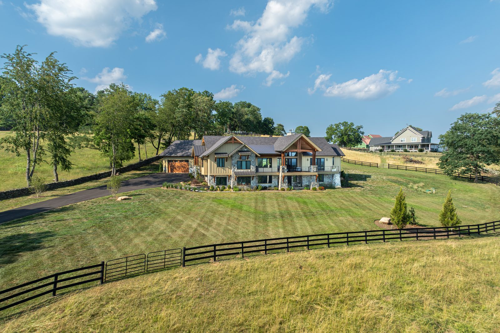

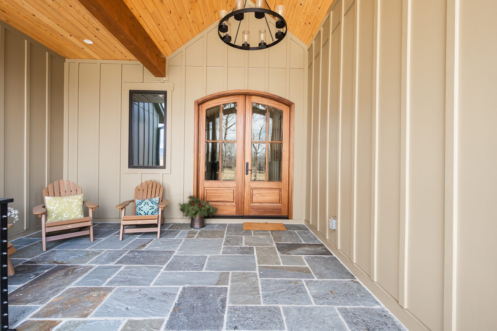
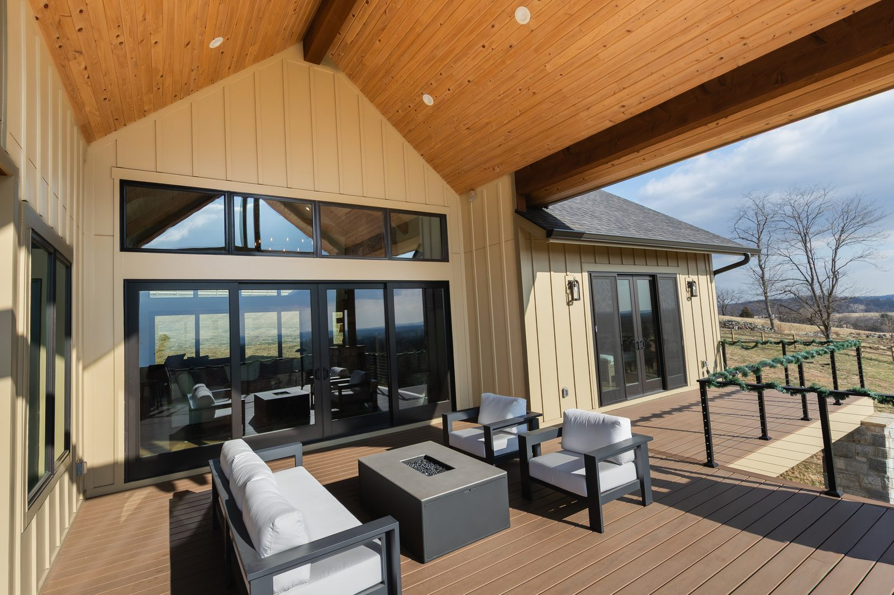

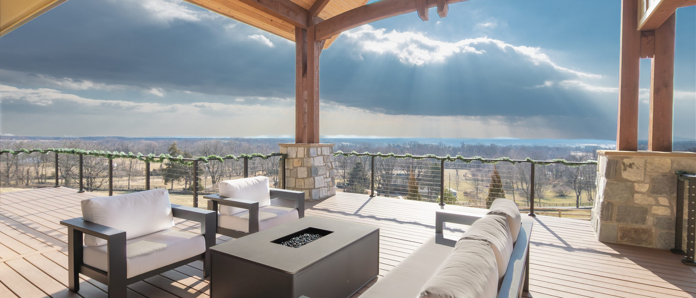

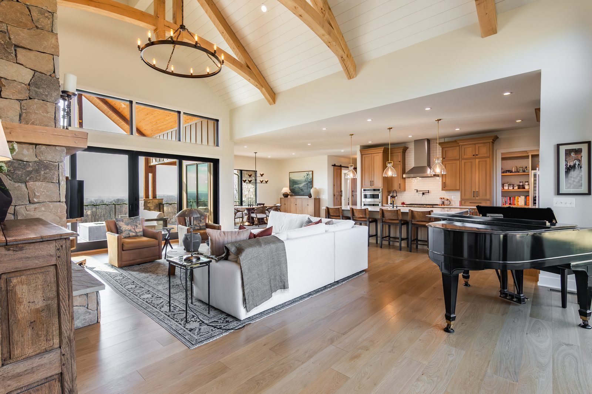
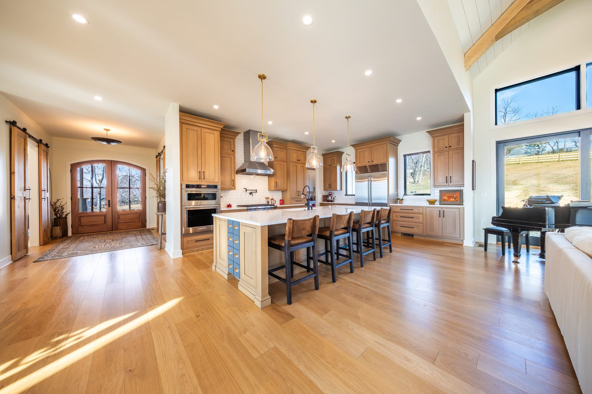

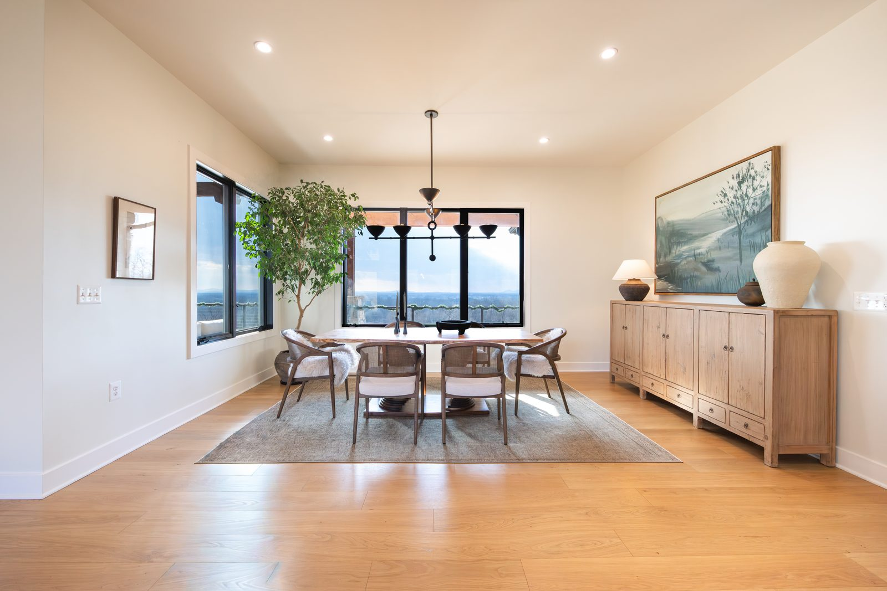
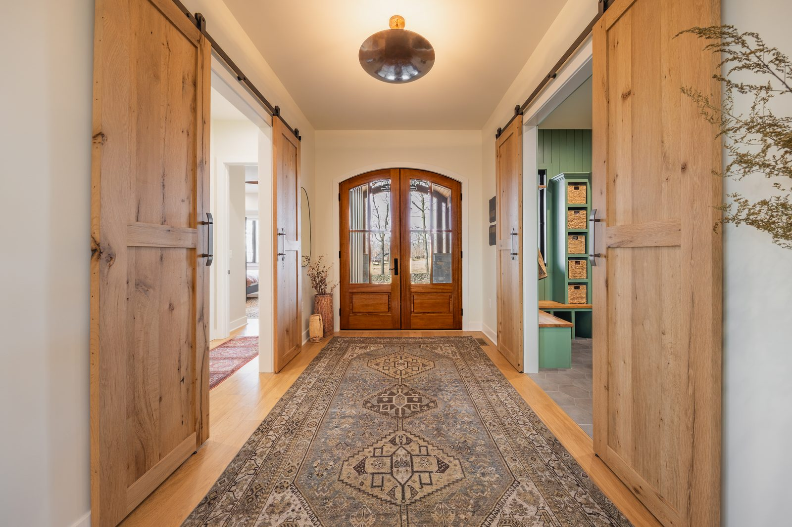
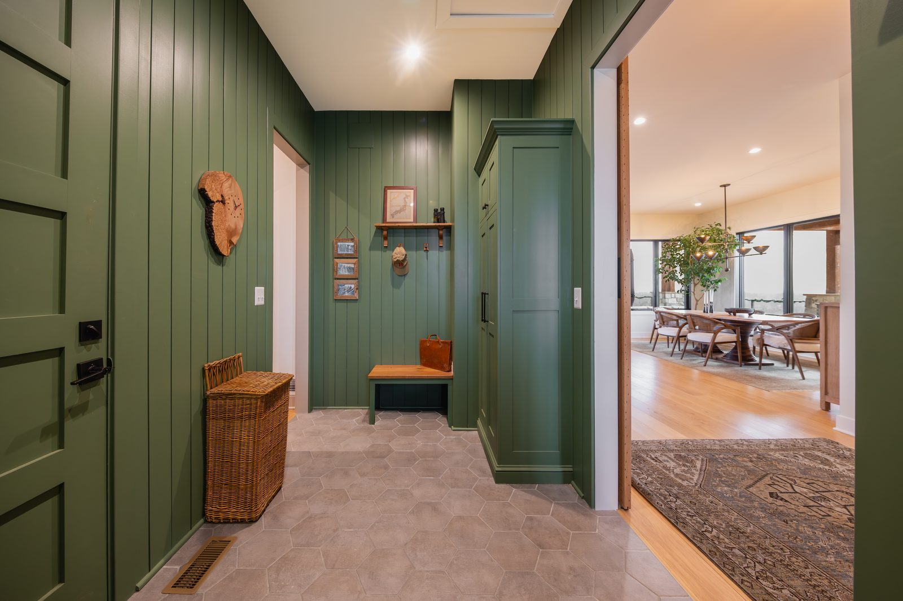
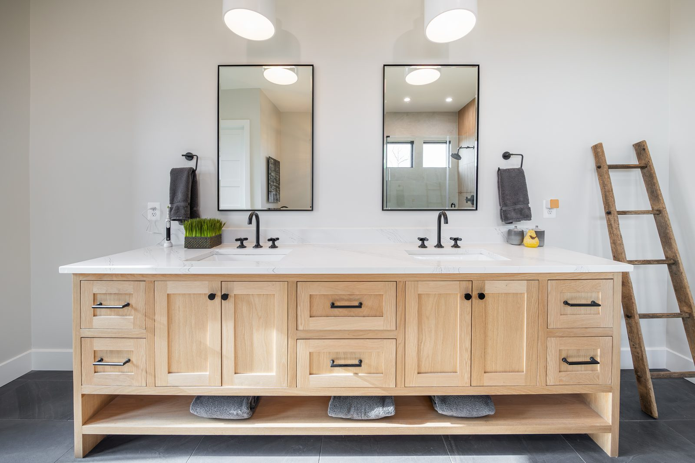
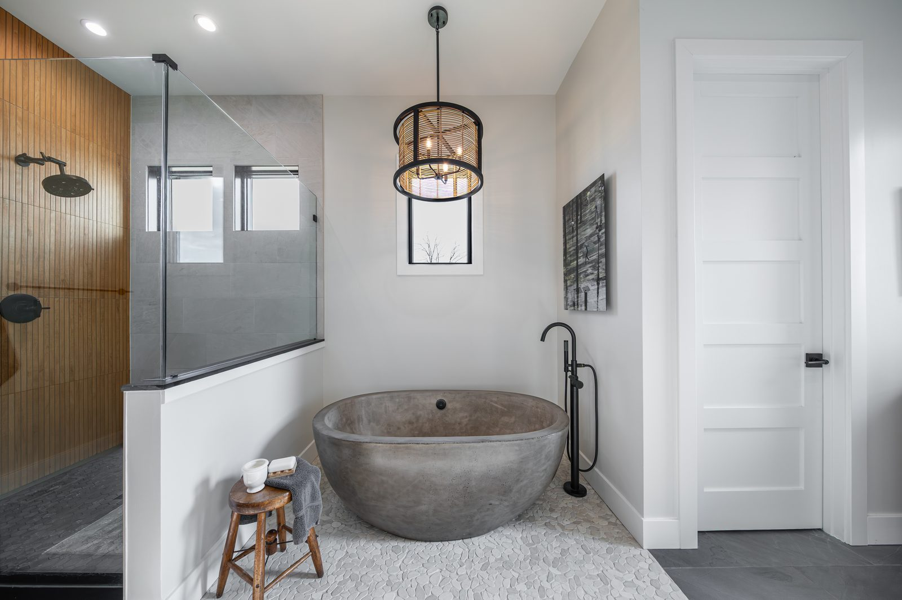
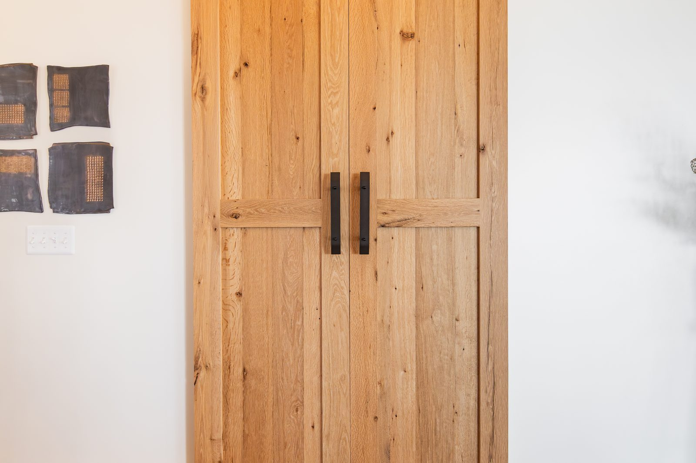
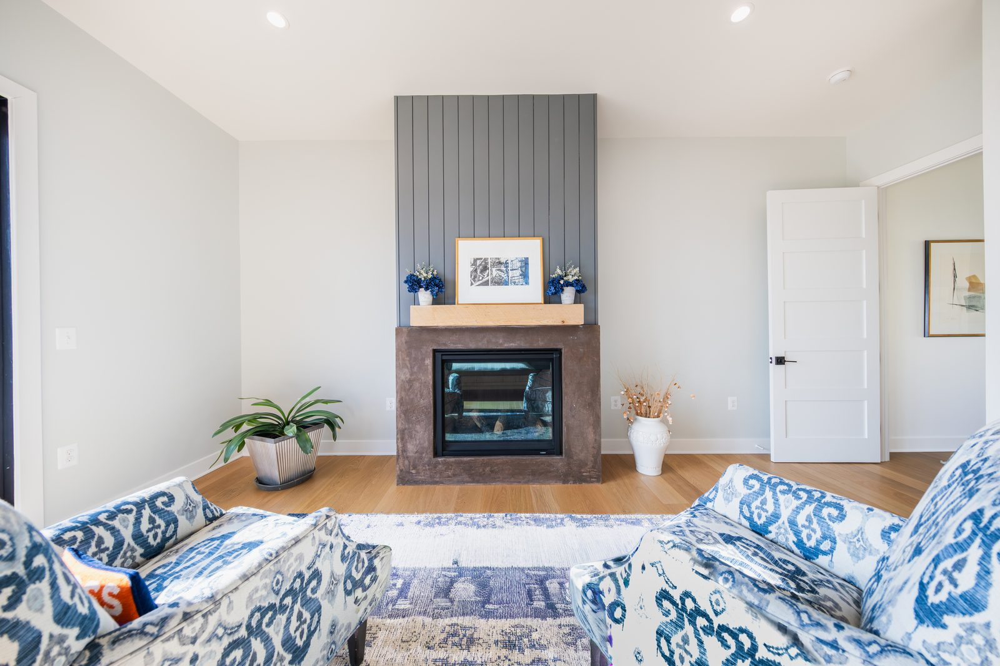

The land
Placement and direction were key.
Open pasture, fence lines, and a long view. Where the house sits and which way it faces got settled before anything was drawn. On a property like this, those two decisions are worth more than any finish you can buy.